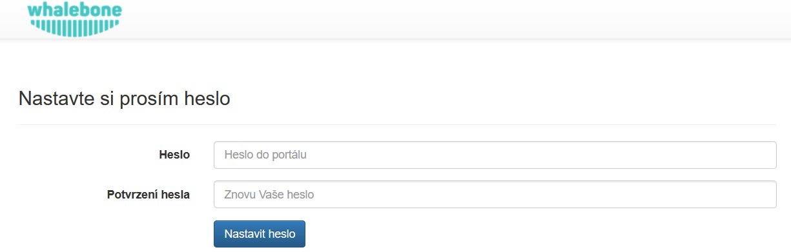
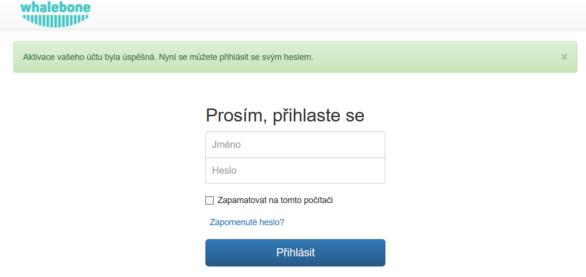
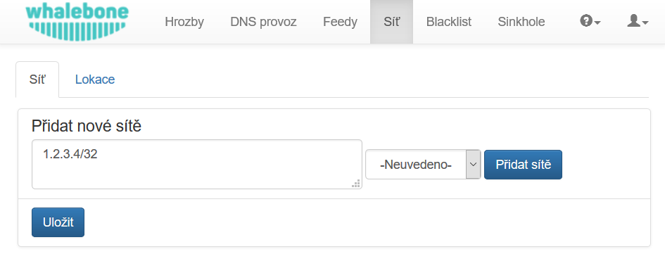
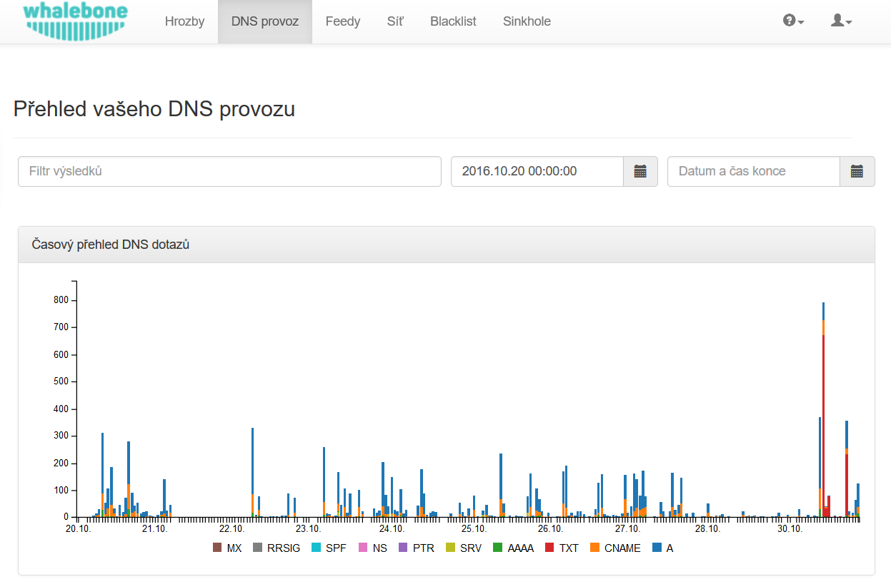

Začínáme
Založení účtu v portálu
Po otevření odkazu z aktivačního emailu si nastavte heslo k vašemu účtu. Nevynucujeme žádná pravidla složitosti hesla, ale doporučujeme dostatečně silné heslo pro ochranu vašeho účtu. Získáním přístupu může dojít k narušení soukromí uživatelů nebo zneužití konfigurace služby.
Po změně hesla budete vyzváni k prvnímu přihlášení pomocí vašeho uživatelského jména a nově zvoleného hesla.
Po prvním přihlášení se zobrazí průvodce, který vás provede hlavními možnostmi portálu. Můžete ho kdykoliv ukončit a případně znovu spustit z menu po ikonkou otazníku a volbou Zobrazit nápovědu.
Definice síťových rozsahů
Síťové rozsahy slouží k rozeznávání provozu jednotlivých zákazníků na cloudových resolverech a blokační stránce (sinkhole). Doporučujeme uvádět celou podsíť, ze které může přijít jak DNS provoz, tak další síťový provoz. Sítí a adres může být uvedeno více a mohou být rozčleněny do tzv. lokalit pro snazší kategorizaci DNS provozu a detekovaných událostí.
Varování
Pokud nevyplníte informace o veřejných síťových rozsazích, cloudové resolvery budou provádět pouze překlad jakéhokoliv blokování. Pokud používáte lokální resolver, jsou sítě potřebné pro správné zobrazení a customnizaci blokační stránky (sinkhole).
Do pole
Přidat nové sítěvložte jeden nebo více síťových rozsahů v notaci <adresa sítě>/<bitová maska>, např:198.51.100.0/24Stisknutím tlačítka
Přidat sítěmůžete přidávat postupné změnyNa závěr nezapomeňte všechny změny zapsat tlačítkem
Uložit
Tip
Při testování filtrace (např. přidáním testovací domény do vlastního blacklistu) nezapomeňte, že mnoho DNS záznamů může být aktuálně zaneseno v DNS cache kdekoliv po cestě (v browseru, operačním systému nebo resolveru). Test otevřením stránky v browseru chvíli po nasazení filtrace Whalebone může tedy selhat a doba do zapomenutí/obnovení DNS cache pro danou doménu bude závislá na velikosti TTL.
Nastavení vlastností filtrace
Každý zdroj informací o hrozbách (Threat Intelligence Feed) může být nastaven jiným způsobem. Pokud je stisknuté tlačítko Používá doporučení, řídí se nastavení doporučením provozovatele služby Whalebone. Pokud preferujete vlastní nastavení, můžete vybrat vlastní akci z možných tří voleb:
Blok
Audit
Zrušeno
Cloudové DNS resolvery
Na cloudové DNS resolvery služby Whalebone nasměrujte požadovaný provoz. Buď svých aktuálních resolverů, routerů nebo přímo jednotlivých počítačů a dalších zařízení. K dispozici jsou překladače dostupné na dvou nezávislých IP adresách:
52.169.120.89
52.166.249.114
V konfiguraci vždy používejte IP adresy obou překladačů. Garance dostupnosti služby se vztahuje pouze na případy využití obou IP adres v konfiguracích, aby došlo k automatickému využití sekundárního DNS překladače při výpadku primárního.
Kontrola provozu
Jestli je provoz správně nasměrován na DNS resolvery Whalebone je možné zkontrolovat z portálu Whalebone pod položkou „DNS provoz“, kde jsou zaznamenávány jednotlivé DNS dotazy. Pokud je vše správně nakonfigurováno a funkční, bude v grafu v řádu jednotek minut viditelný DNS provoz. Pokud DNS provoz nebude na úrovni služby viditelný, překontrolujte manuálně dostupnost cloudových resolverů ze zdrojových zařízení.
Kontrolu je možné provést identicky ze strojů s OS Windows i Linux pomocí nástroje nslookup. Po jeho spuštění nastavte IP adresu Whalebone resolveru a zkuste přeložit doménové jméno existující domény.